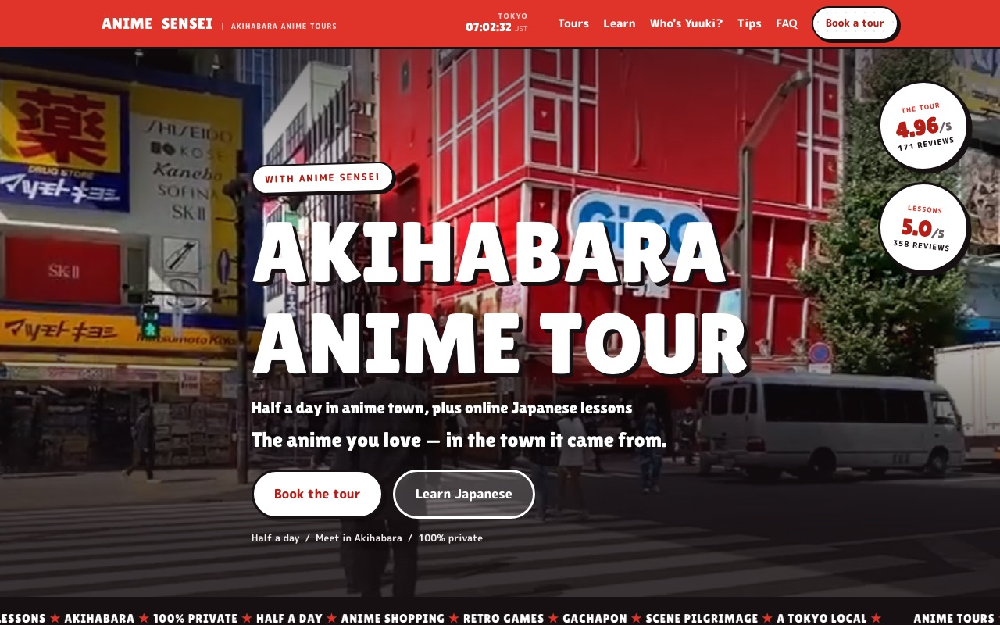
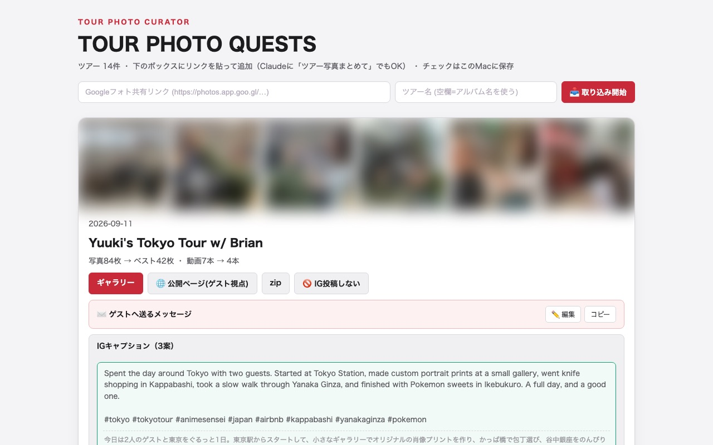
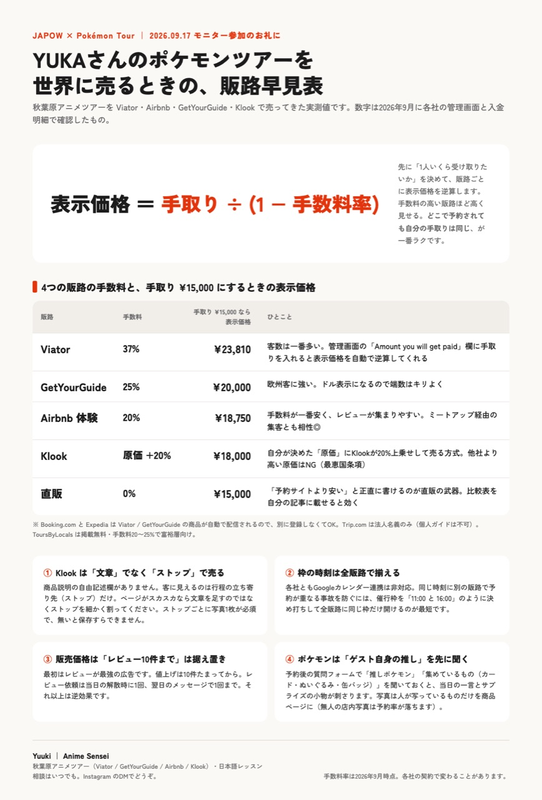
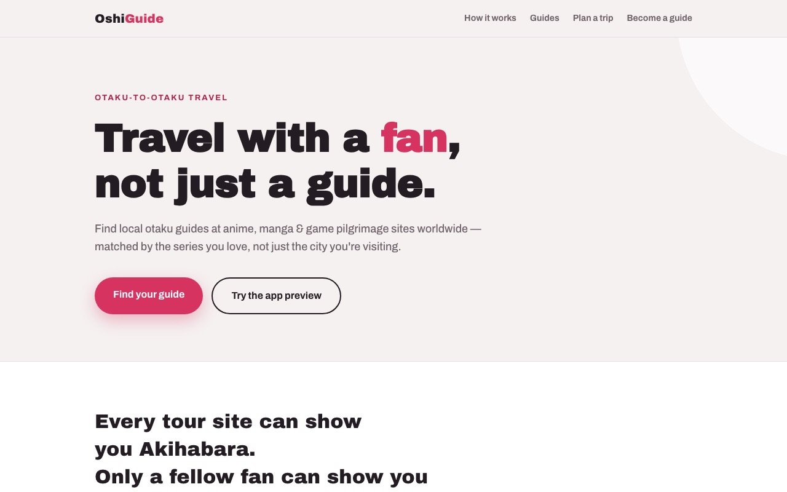
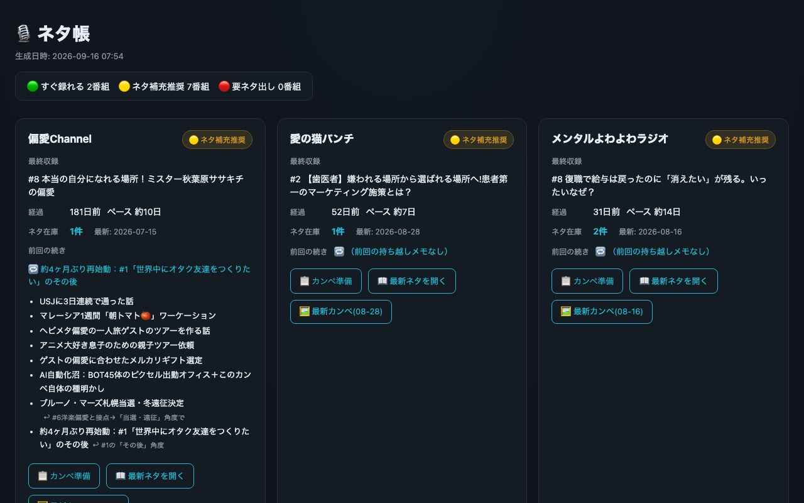
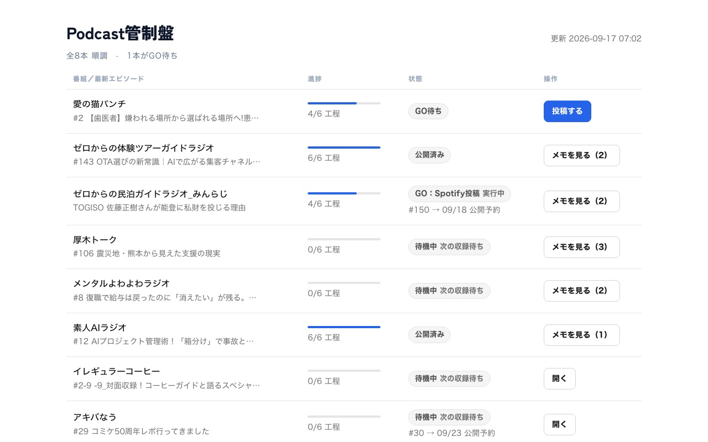

ツアー業務のAIツール図鑑
秋葉原アニメツアーの現場で実際に動いているAIツールを、仕事の流れの順に並べました。★は2026年8月以降に増えたものです。送信・投稿・公開ボタン・料金の判断は人間が押しています。
集客
予約サイト
ツアーとレッスンを「1人の先生が用意した日本への2つの扉」として1つのサイトにまとめた。設計・文章・実装をAIと一緒に進め、公開後の改修は下のSEO担当が毎朝続けている。

SEO担当（毎朝7:30に無人で動く）★
施策台帳から毎朝1〜2件を選び、自分でサイトを直して公開まで済ませる。夜中には英語記事を量産し、ChatGPTやGeminiに自分のツアーが引用されるかも毎日測っている。
- 順位表は検索クリック・表示回数・平均順位の28日推移と、期限つきの採点で管理
- 記事は1晩で20本。日本語学習の練習問題679問も記事から自動抽出
競合調査★
GetYourGuide・Viator・Airbnb・Klookと検索の上位5本を実際に開き、価格・所要時間・行程の店名・写真枚数・レビューの傾向を記録して、自分の商品ページとの差分を出す。読み取り専用で、商品ページは触らない。
2026-09-16の調査で出た差分（抜粋）
- 同じツアーなのにOTAごとに中身が違う。実在店名はViator 5件・Airbnb 5件に対し、GetYourGuideは0件
- 所要時間が4か所でバラバラ（3時間／4時間／3-4 hours／4 hours）
- GetYourGuideのレビューが3件のまま。Viator 174件・Airbnb 171件と桁が2つ違う
- 競合はプライベート帯で¥27,000〜¥44,000が実際に売れている。自社は¥18,750〜23,810で下限寄り
予約管理
かぶり番（ダブルブッキング見張り）
5分ごとにGmailを読み、GetYourGuideとViatorの予約・変更・取消を専用カレンダー「ツアー予約」に書き込む。他のツアーや遠征とぶつかる時だけLINEが鳴る。Macが寝ていても動くようGoogle Apps Scriptで作った。
- Airbnbは公式のカレンダー連携をそのまま使い、「動かせない相手」として衝突判定にだけ使う
- レッスンや収録との重なりはLINEを鳴らさず、カレンダーに⚠️を付けるだけ
Viator即時確定への切り替え★
在庫連携ができないViatorを、リクエスト制から即時確定に切り替えた。守りは4層。枠を開けすぎない、直前48時間は締める、かぶり番が検知する、最後は代打とお詫び。切り替え前はリクエストの空き判定と仮押さえを15分ごとに進めるBOTが受理を半自動化していた。
返信番頭（未返信チェック）
Gmail・Messenger・Instagram・WhatsApp・LINEで48時間以上放置しているやり取りを検出し、本人の文体で返信案を用意して承認待ちに並べる。送信は絶対にしない設計。
ツアー準備
ツアーしおり
ゲストのフォーム回答と予約メールから、その人専用の行程案、日英のしおり（英語はPDF）、好きな作品に合わせたメルカリのサプライズギフト案を一式作る。当日のゲスト情報はiPhoneのホーム画面ウィジェットに出て、日付が過ぎると次のゲストに切り替わる。
ツアー職人
アンケートが届いたらワンクリックで行程の叩き台と昼食候補（営業◎／定休×／要確認△）がゲスト別カードで出る。予約メールの取り込み、変更リクエストや未回答の注意も同じ画面に並ぶ。

当日〜事後
写真セレクタ
当日の写真をブレ・露出・似た構図・美的スコアで機械的に絞る（例: 84枚→42枚、動画7本→4本）。ゲスト用ギャラリー、お礼のメッセージ、Instagramキャプション3案まで同時に出る。処理は全部Macの中で完結し、写真を外部のAIに送らない。

レビュー返信
毎朝8:30に新着レビューを取得し、人名を伏せた返信文案をGoogleシートに並べる。
経営・仲間向け
販路早見表★
Viator 37%／GetYourGuide 25%／Airbnb 20%／Klook／直販の手数料と、手取り¥15,000から逆算した販売価格、出品の罠4つを1枚にまとめた。9/16のAirbnbホストワークショップで会ったホストに翌日渡した。

OshiGuide（作りかけ）★
アニメ聖地の現地ガイドを、街ではなく「好きな作品」で探せる名鑑。決済も予約も持たず、各ガイドの既存OTAページへ送客するだけの構造。まだ受付フォームの接続前。

番組運営
収録前のネタ出し
過去回・活動ログ・Gmail・カレンダー・SNSの未読を横断して集め、過去回で話したネタを弾き、会話の入り口だけを並べる。8番組の「そろそろ録る順」と在庫はネタ帳に出る。

収録音源の自動編集
音声を置くだけで自動編集が走り、17分の番組が約4分で仕上がる。AIが波形と耳で検品し、管制盤のGOボタンからSpotifyの投稿画面まで作る。
